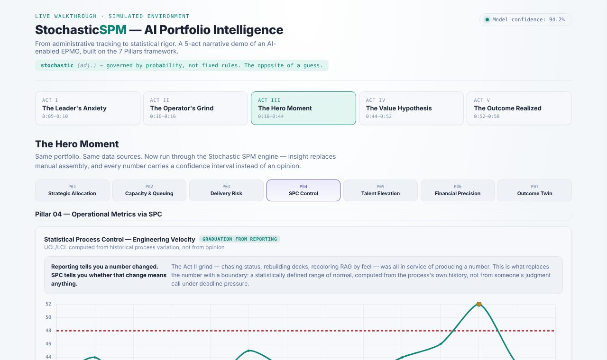

The original · 60 minutes
Strategic portfolio management
An AI-enabled EPMO told in five acts, from a portfolio nobody trusts to documented ROI. Built on the 7 Pillars framework.
- Interactive walkthrough with all seven pillars
- Presenter notes built in: press P
- Deck, full script and example files